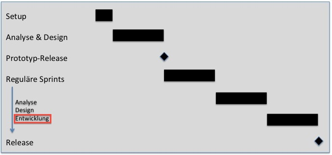

Two development activities are supported:
-
The physical data model can be derived from the logical one. But you can also add or change table definitions
manually. These manual changes will not be overwritten as far as possible when there is a new derivation from the logical model.
-
You can specify the generic presentation of a scorecard.